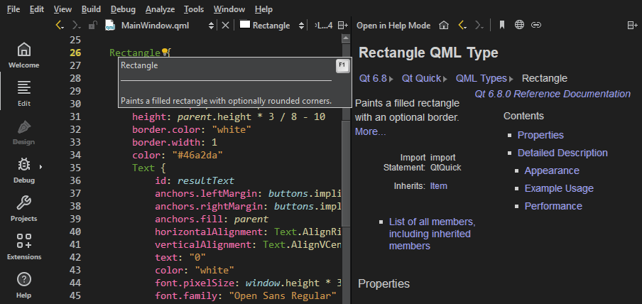

Get help
Qt Creator comes fully integrated with Qt documentation and examples using the Qt Help plugin.
- To view documentation, switch to the Help mode.
- To view context sensitive help on a Qt class or function as a tooltip, move the mouse cursor over the class or function. If help is not available, the tooltip shows type information for the symbol.
- To show tooltips for function signatures regardless of the cursor position in the function call, select Ctrl+Shift+D.
- To show the full help on a Qt class or function, select F1 or select Context Help in the context menu. The documentation is shown in a view next to the code editor, or, if there is not enough vertical space, in the fullscreen Help mode.
- To change how the documentation is shown in the Help mode, go to Preferences > Help.
The following image shows the context sensitive help in the Edit mode.

Change the font
If the help HTML file does not use a style sheet, you can change the font family, style, and size in Preferences > Help > General.

Set the default zoom level in Zoom. When viewing help pages, use the mouse scroll wheel to zoom them. To turn off this feature, clear Enable scroll wheel zooming.
To turn off antialiasing, clear Antialias.
Return to the editor
To switch to the editor context when you close the last help page, select Return to editor on closing the last page.
Select help viewer backend
The help viewer backend determines the style sheet that is used to show the help files. The default help viewer backend that is based on litehtml is recommended for viewing Qt documentation. You can choose another help viewer backend in the Viewer backend. To take the new backend to use, reload the help page.
View function tooltips
To hide function tooltips by default:
- Go to Preferences > Text Editor > Behavior.

- In Show help tooltips using the mouse, select On Shift+Mouseover.
You can still view the tooltips by selecting and holding down the Shift key.
To use a keyboard shortcut for viewing help tooltips, select Show help tooltips using keyboard shortcut (Alt).
See also How To: Read Documentation.